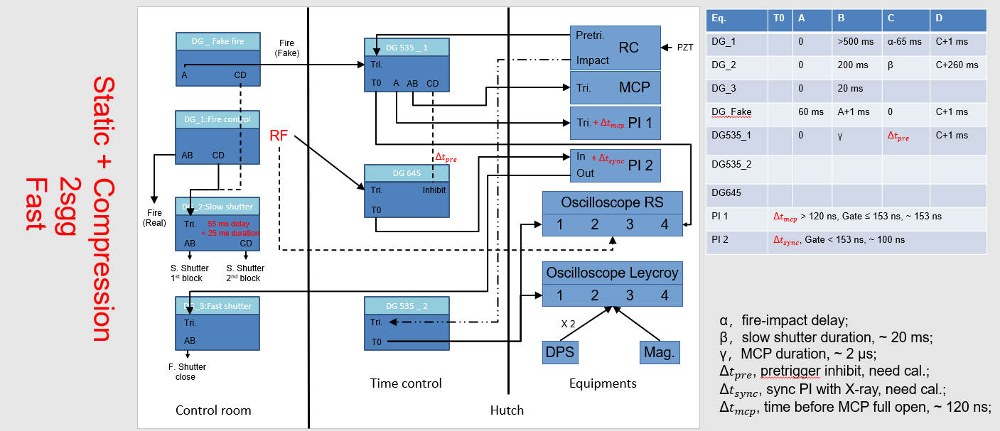
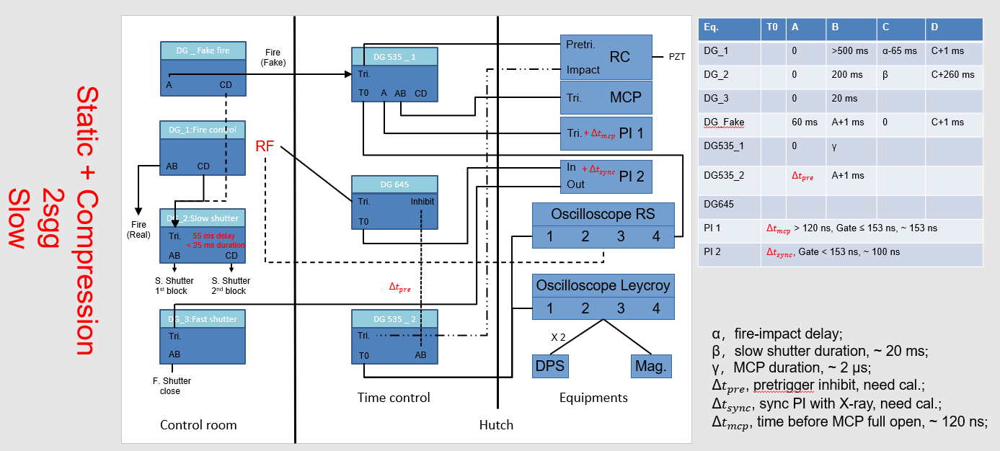
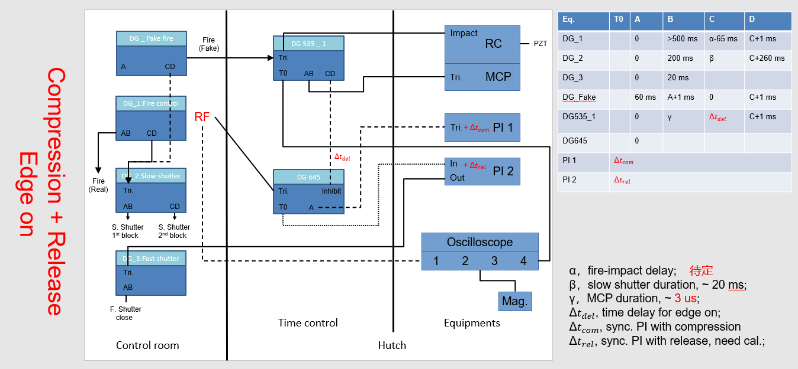
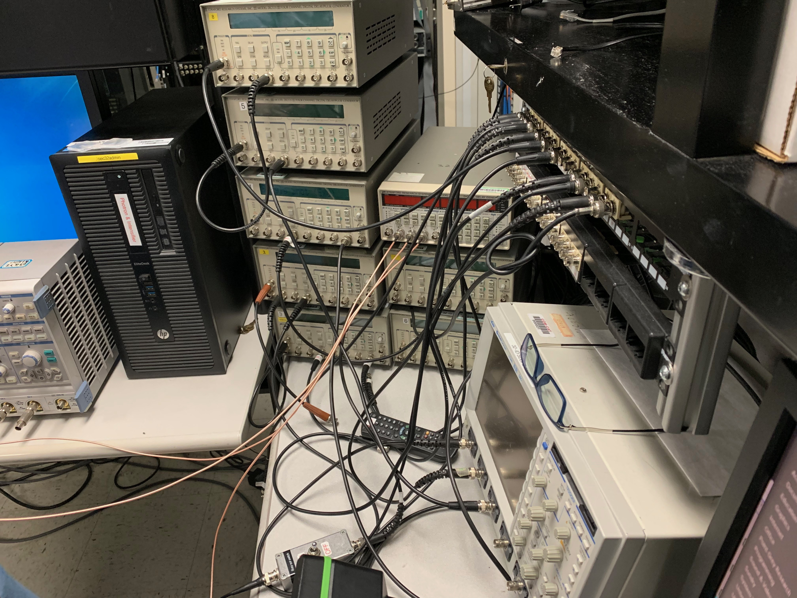
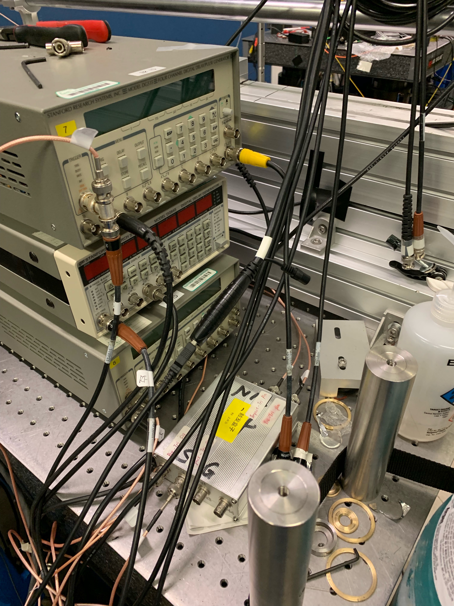
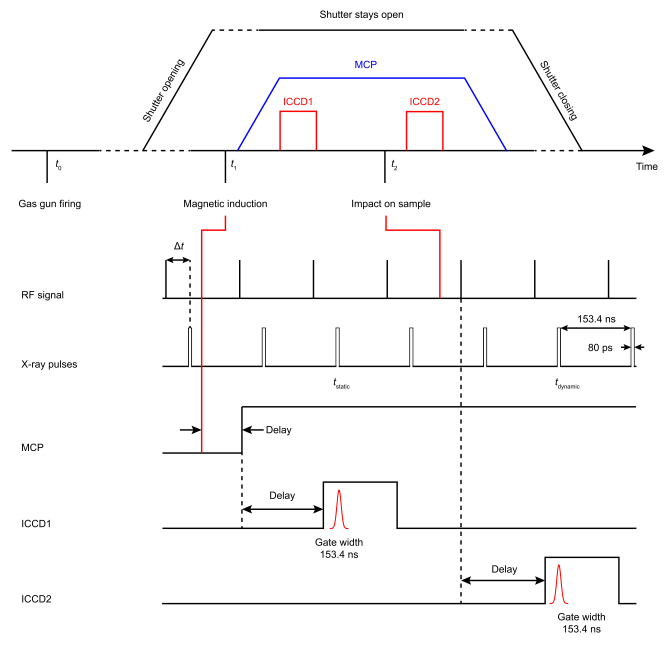
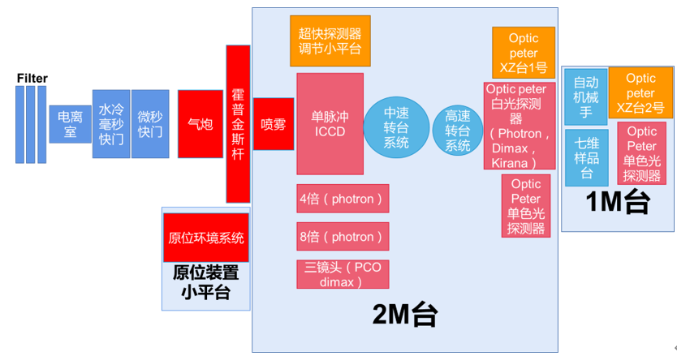

SSRF-2021-Oct
Schedule
SSRF-快速成像线站 10.29-10.31 (3)
设备Checklist
加载
垂直炮
PC窗口问题
电探针触发/磁测速触发问题?
Fire 2 Impact delay
弹托 铜环触发
样品架
霍普金森杆
触发问题
时序问题
诊断
超快成像
成像一套（匹配PI?/ SAZ?）
闪烁体 LuAG:Ce（15x15 多带几片，容易碎）
超快衍射
衍射一套（匹配PI + MCP?） @北京，邮寄去上海？
MCP适配？
5 V电源及其接线
配高模块
PI分幅？
打孔闪烁体？
近摄镜
镜头
Canon/Nikon口适配
固定板
分光板
时序
示波器（至少2个）
DG535x5至少? + DG645?@北京？
PDV? rc盒子？
快慢门控制?
超多BNC线（以及长度）@北京
BNC <-> SMA
样品
静态测试
标样
强织构AZ31
弱织构Al
粗晶Co
单晶Si
多晶Diamond
垂直炮
射流样品（时间分辨）
JIMA卡（空间分辨）
霍普金森杆
From T. Zhong （J. Y. Huang）
配件
位移台及其控制@北京
pinhole/slits@北京
阻抗匹配
burnpaper@北京?
吸收Al片
网线
USB延长线
控制电脑 + 控制软件
PI key
工具
注意问题
有些信号多路连接带不动，需要DG转一下
DG535低电平inhibit
ASP时序图参考
2sgg fast

2sgg slow

1sgg edge on

时序接线
Control room

Hatch

总时序图

时序计算（need to check）
MCP240 120 ns 完全开启
DG535 85 ns 延迟
DG645 100 ns 延迟
RC盒子忘了
电探针 无延迟
PI 最小延迟忘了
BNC线信号传递速度按光速算
示波器延迟记得测
不同阻抗延迟不同 注意适配
1M Ω 慢一些 而且有不稳定的jitter
50 Ω容易烧坏设备
SSRF
Setup

需要从北京带走的设备
位移台控制 + 位移台（z2 x4 ？）
XRD模块
DG?
Condition
拉群 @ S. Chen
SSRF对接的人
SSRF那边现在有些什么？
DG够不够多
BNC线够不够
快慢门DG控制？
快慢门Delay jitter
RF信号的jitter
光谱长啥样？8 keV基频
供电系统
人员